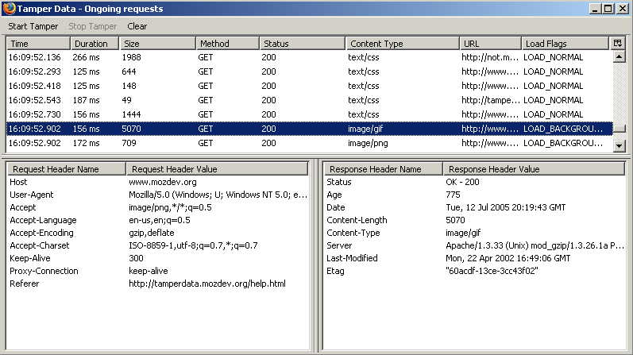
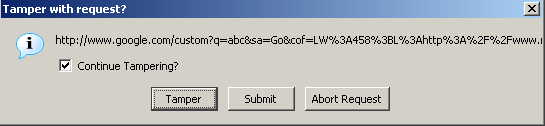
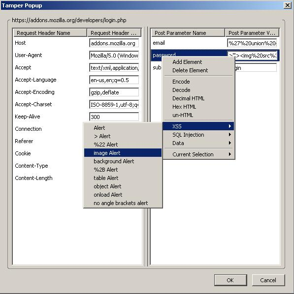

<!-- MAIN CONTENT -->
<h2 class="page-header">Screenshots</h2>

<h5>Main logging window</h5>



<h5>Tamper Confirmation</h5>



<h5>Tamper Window with context menu</h5>



<!-- footer -->
</div>
<br>
<br>
<p id="mozdev-feedback">
For questions or comments about tamperdata, please send a message to <a href="mailto:adamsplugins@gmail.com">the author</a>.
</p>

<br>
<br>
<br>
<!-- /footer -->
